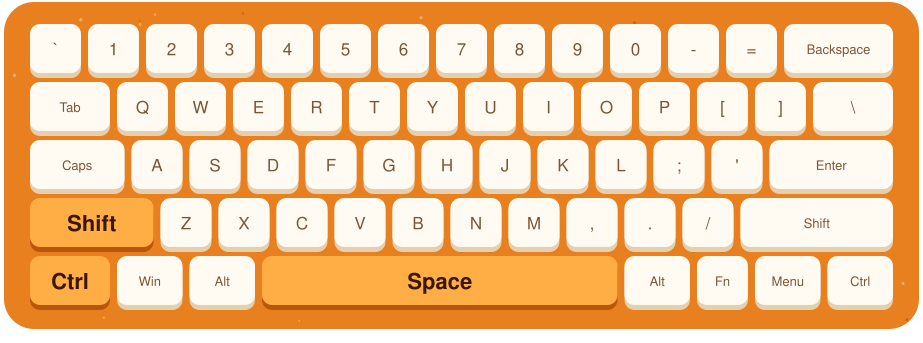
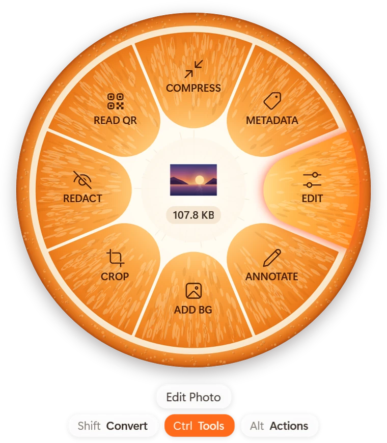
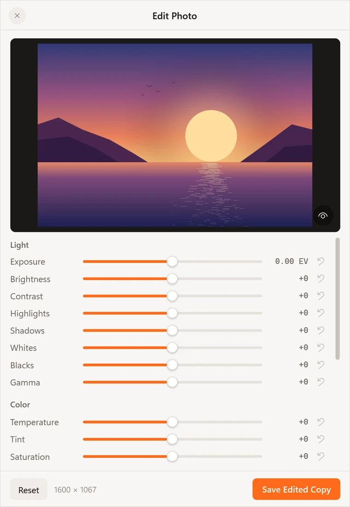
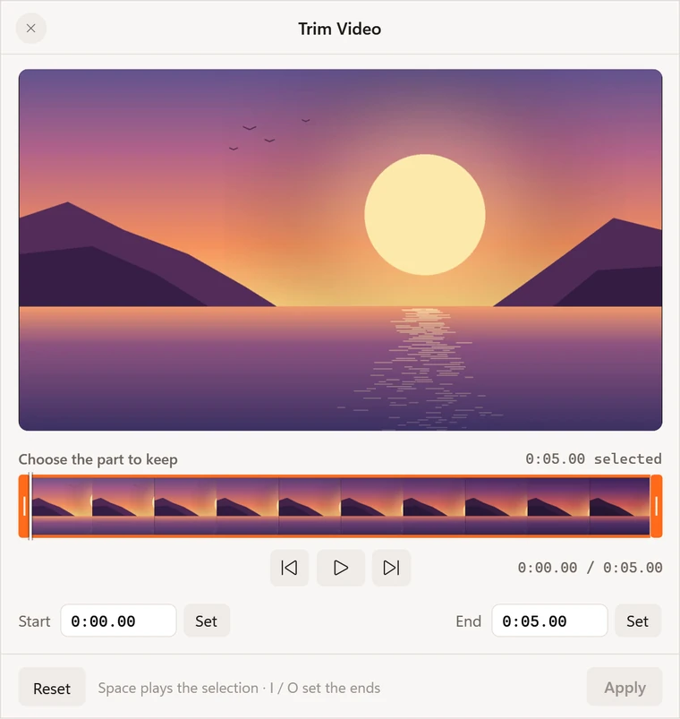
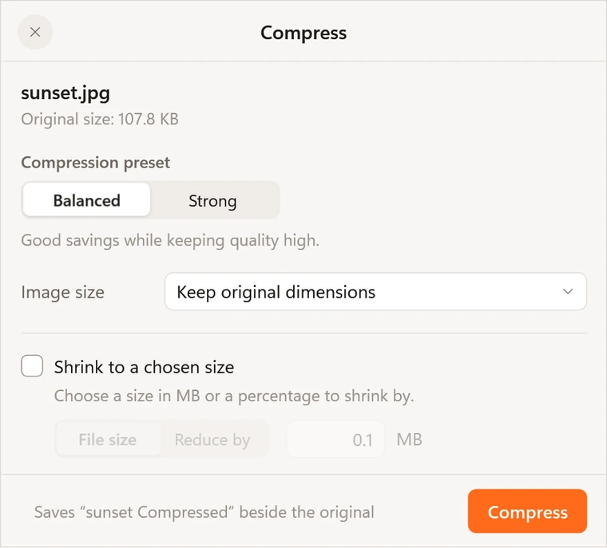
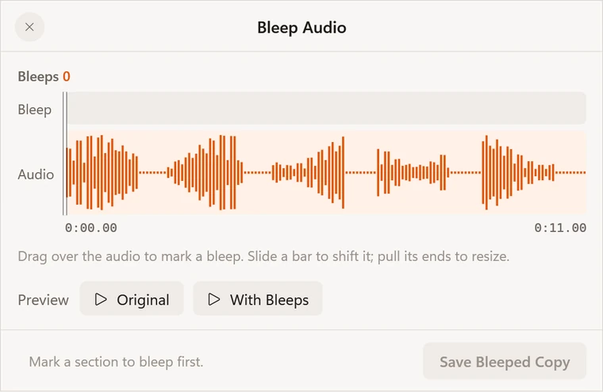
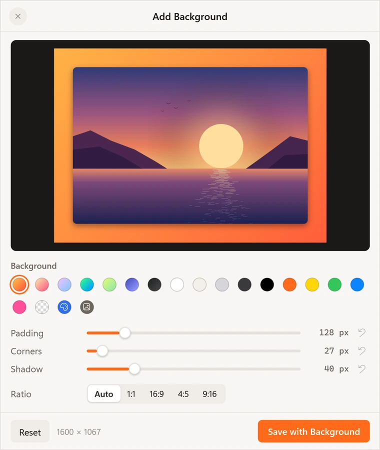
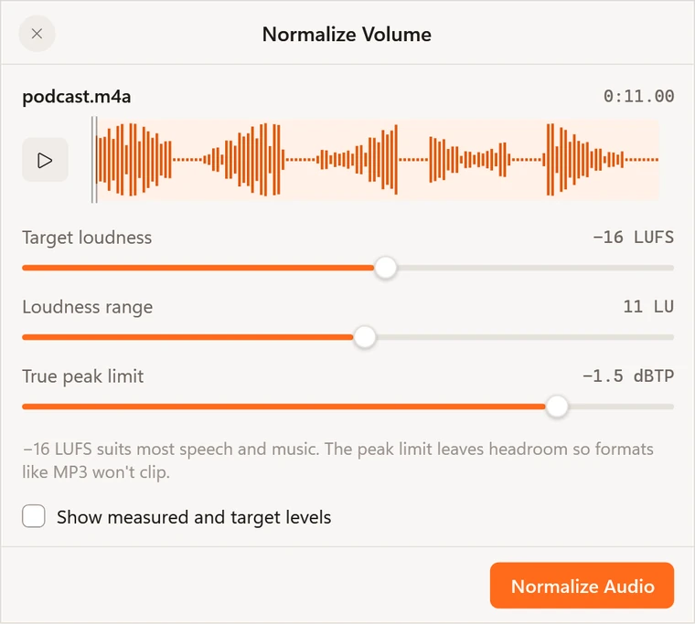
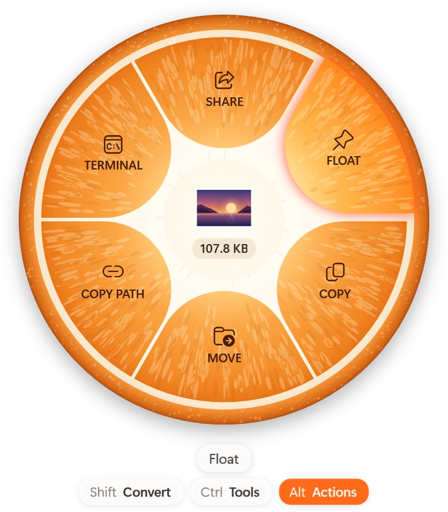
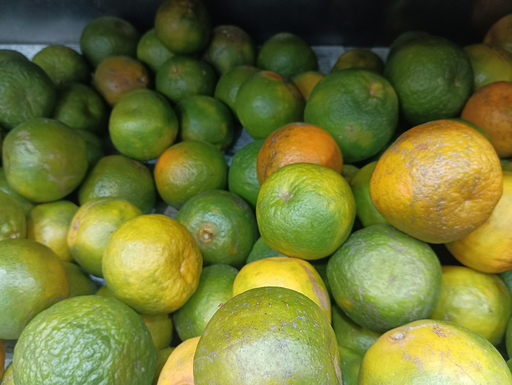

Images
- JPG
- PNG
- WebP
- HEIC
- AVIF
- TIFF
- BMP
- GIF
- SVG
Saves as JPG, PNG, WebP, AVIF, TIFF, BMP, GIF, ICO or PDF, and reads the text out of a picture.
Select a file, press Ctrl + Shift + Space, and pick what it should become. Santra converts, compresses and edits it right on your PC.

Free · Windows 10 and 11 · nothing is uploaded
This is the real wheel. Pick a file, then click a slice.
Tap Shift, Ctrl or Alt to switch wheels, or press Ctrl + Shift + Space and use the arrow keys.
Pick a format
10 formats · 8 tools · 6 actions
Start to finish in under a minute: hold a key, drag, drop, done.
Hold Ctrl as you drag a file and the wheel shows the tools for it. Each one opens a small window right where you are, and saves a new copy when you're done.








Hold Shift as you drag a file and pick what it should become. The original is never touched.
Saves as JPG, PNG, WebP, AVIF, TIFF, BMP, GIF, ICO or PDF, and reads the text out of a picture.
Saves as MP4, MOV, MKV, WebM, AVI, WMV or GIF, or keeps just the sound as MP3, M4A or WAV.
Any of these to any other, with the video engine bundled in the download.
PDF to Word, PowerPoint, Excel, EPUB or text; documents to PDF, EPUB or pictures of each page.
Sheets to XLSX, ODS, CSV or PDF. Slides and older Office files need Office or LibreOffice.
Subtitles become SRT, VTT or plain text. Archives become ZIP, TAR or TAR.GZ, or unpack into a folder.
Santra has no server and no account. Conversions, text recognition and face detection all run on your own computer, even with the network unplugged. It only goes online to ask GitHub for a new version, and you can turn that off.
Santra (संतरा) is Hindi for the mandarin orange, the fruit Nagpur is known for. Cut one in half and the wheel is already there: segments around a white core.
Your hand is already moving the file. A wheel puts every choice the same short distance away, so the last step is simply letting go.
Download for Windows
Yes. No trial, no account, no ads. Download it and keep it.
No. Every conversion and edit runs on your PC, and Santra has no server to send anything to. The only thing it ever fetches is the list of new versions from GitHub, if you allow update checks.
Windows 10 (version 2004 or later) or Windows 11, 64-bit. Slides and older Office files also need Microsoft Office or LibreOffice.
Into the same folder as the original, with a new name. The original is never changed, and the new file is selected for you.
Open Windows Settings, then Apps, then Installed apps, and uninstall Santra. Everything it added goes with it; only your settings stay behind.
No, Santra is for Windows. On a Mac, Tangerine by Leap Studio, the app that inspired Santra, does the job.
Next file? Download Santra
Free for Windows 10 and 11. Run the installer, then press Ctrl + Shift + Space on any file.